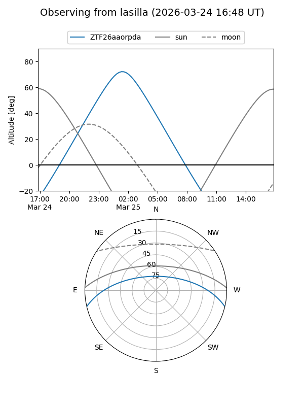
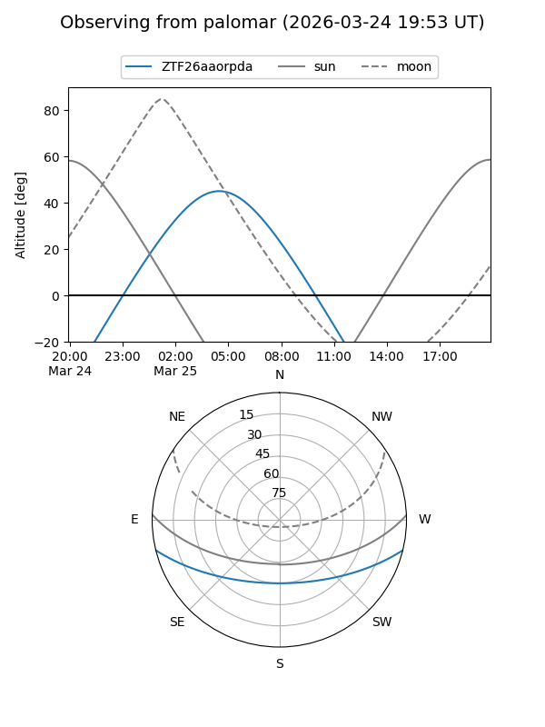

ZTF26aaorpda
Target ZTF26aaorpda at 2026-03-25 04:27
Aliases and brokers:
FINK: link
Lasair: link
ALeRCE: link
alt names
ZTF26aaorpda (ztf,fink_ztf)
Coordinates:
equatorial (ra, dec) = 132.6748,-11.44130
equatorial (HMS+DMS) = 08:50:41.95,-11:26:28.67
galactic (l, b) = (238.0541,+20.07582)
Flags:
Photometry:
last ztfg=17.03
1 ztfg detections
Lightcurve
Visibility


Additional plots